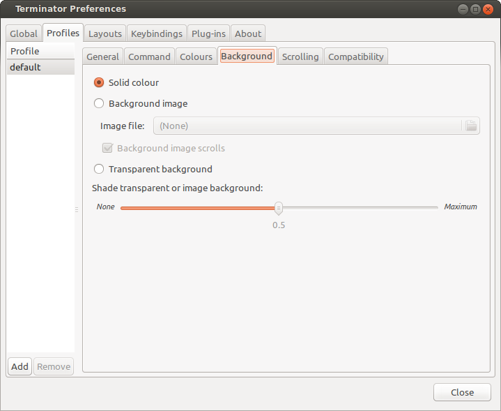
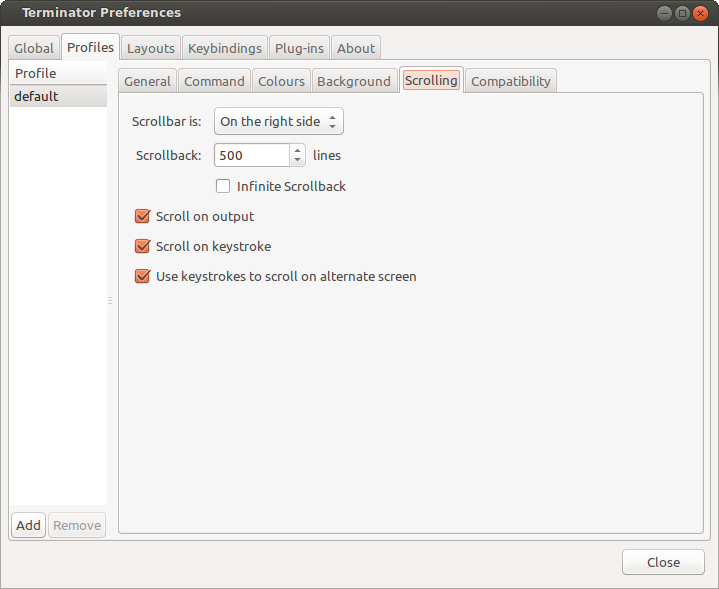
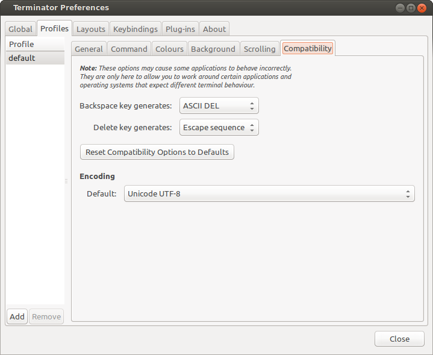
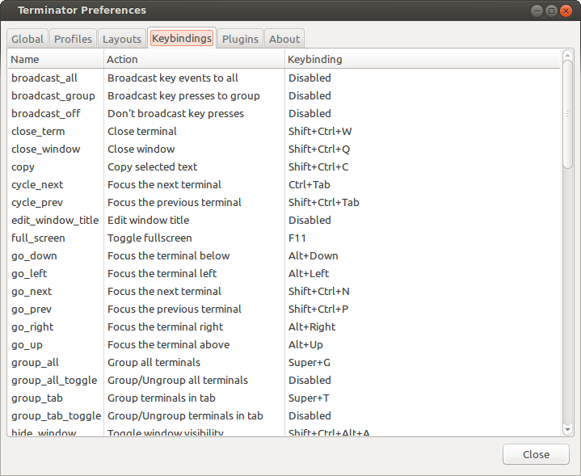
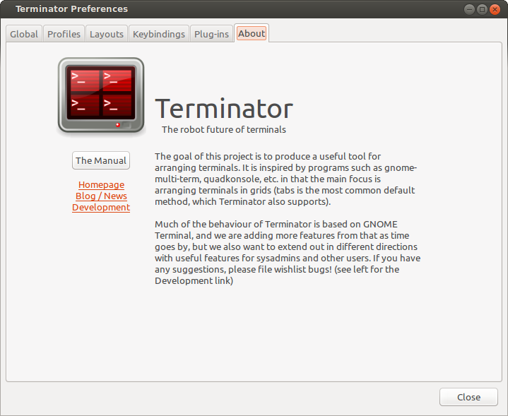

Preferences Window¶
Terminator is highly configurable, and automate-able, so the Preferences dialog is naturally quite extensive. It currently consists of six tabs. Let’s work through them one by one.
Global¶

These settings are defaults, but some of them can be overridden by a options on the command-line, or within a layout. A number will also require a restart to take effect.
Behaviour¶
Window state (default: Normal)
This will determine what happens on startup normally.
- Normal - Window opens as normal.
- Hidden - Window does not open. Useful at login, so it is already available with a shortcut.
- Maximised - Window opens maximised in the standard window manager frame.
- Fullscreen - Window opens fullscreen with no window manager frame.
Always on top (default: off)
Window attempts to remain on top.Show on all workspaces (default: off)
The focused window will follow if you switch to a different virtual desktop.Hide on lose focus (default: off)
This is a quake console like feature, where the user want the window to vanish when clicking elsewhere.
This is rather buggy at the moment as it is very easy for the main window to lose focus and disappear.
Hide from taskbar (default: off)
The first window opened will not be displayed in the taskbar. Subsequent windows will show in the taskbar (bug?).Window geometry hints (default: off)
If this is checked, then when resizing Terminator will attempt to step the sizing by the current font, and display a small box with the dimension of the window in characters.
Warning
If you have problems with Terminator windows shrinking in an uncontrollable way, then turning this option off will usually fix the issue. It is not clear why, but it seems Terminator and the window manager get into an argument over what size the window should be.
DBus server (default: on)
If a Terminator DBus server is not already on the session bus, try to start one.Mouse focus (default: Click to focus)
By what method the mouse pointer sets the focus on a terminal.
- GNOME Default - Act as per the system settings.
- Click to focus - You must click with in a terminal to make it the focus.
- Follow mouse pointer - Moving the pointer over a terminal makes it the focus.
Broadcast default (default: Group)
Which broadcast mode should be selected at startup:
- All - All terminals receive keystrokes.
- Group - Only terminals in the same group as the current terminal receive keystrokes.
- None - Only the current terminal receives keystrokes.
PuTTY style paste (default: off)
Make the right mouse button operate like in PuTTY, soright-clickwill paste the Primary selection, andmiddle-clickwill open the Context Menu. (For ex-PuTTY users).Smart copy (default: on)
If enabled and there is no selection, the shortcut is allowed to pass through. This is useful for overloadingCtrl+Cto copy a selection, or send the SIGINT to the current process if there is no selection. If not enabled the shortcut does not pass through at all, and the SIGINT does not get sent.Re-use profiles for new terminals (default: off)
When creating a new terminal with splitting or new tabs, if this is enabled, then the profile from the previously focussed terminal will also be used for the new one.Use custom URL handler (default: off)
If this is enabled thenCtrl+clickon a URL will try to use the command defined in Custom URL handler to open the link. If not enabled, Terminator will attempt to open the link with its internal logic.Custom URL handler (default: inactive, empty)
If active and set, then URL’s will be passed as a command-line parameter to the given command.
Appearance¶
Terminator seperator size (default: -1)
This is the width in pixels, and can range from -1 to 5. The value of -1 will take the default size from the system theme.Unfocused terminal font brightness (default: 0.8)
Terminals that do not currently have the focus will can be dimmed to aid focus. The value can range from 0 (invisible) to 1 (full brightness)Window borders (default: on)
The window manager frame can be removed from your windows.Tab position (default: Top)
Where the tabs will be located within the window
- Top
- Bottom
- Left
- Right
- Hidden - Tabs still work, you just can’t see them.
Tabs homogeneous (default: on)
Tabs will have equal widthsTabs scroll buttons (default: off)
When there are more tabs than can fit within the window buttons will be drawn for moving left and right.
Terminal Titlebar¶
There is a table of the colours for the titlebars on the left. These are modelled on those used in a utility I used to use called ClusTerm. The three sets (Focused, Inactive and Receiving) will make more sense after reading the section about The Grouping Menu.
Focused Inactive Receiving Font colour #FFFFFF #000000 #FFFFFF Background #C80003 #C0BEBF #0076C9 Hide size from title (default: off)
At the end of the label in the titlebar the size of the terminal is given in characters, i.e. (80x24). Enabling this item will disable the size text.Use the system font (default: on)
By default the system defined proportional font will be used for the text in the titlebar. Turning this off allows you to use a custom font.Font (default: inactive, system proportional font)
If active and set, then the custom font to be used in the titlebar.Warning
With newer versions of some of the underlying libraries, using a bitmap font can cause the Preference window to crash. If you find this happening, you will need to either remove the configuration from the Terminator configuration file or you will need to change your system settings. Please see LP#1294699 for more information.
Profiles¶
You should already be familiar with the sub-tabs from GNOME Terminal, and Terminator’s are modelled on those available in GNOME Terminal where it makes sense, and give much of the same functionality. Bear in mind that some of these differences are due to changes in the underlying VTE widget between GTK2 and GTK3.
Below we will go through each pane, and highlight and explain differences between Terminator with GTK2 and GNOME Terminal with GTK3.
General¶

One key difference is that we have a sidebar to the left listing the available Profiles, as opposed to GNOME Terminator, where the list is a separate window launched from the menu bar.
Use the system fixed width font (default: on)
By default the system defined proportional font will be used for the text in the terminal. Turning this off allows you to use a custom font.
Font (inactive, system fixed width font)
If active and set, then the custom font to be used in the terminal.
Warning
With newer versions of some of the underlying libraries, using a bitmap font can cause the Preference window to crash. If you find this happening, you will need to either remove the configuration from the Terminator configuration file or you will need to change your system settings. Please see LP#1294699 for more information.
Allow bold text (default: on)
Allows you to disable the use of bold fonts in the terminal.
Anti-alias text (default: on) †Not in GNOME Terminal
In Terminator you can turn the font smoothing off. This is no longer possible in GNOME Terminator.
Show titlebar (default: on)
The titlebar strip across the top of each terminal can be turned off.
Copy on selection (default: off)
This puts the selection into the copy/paste buffer, as well as being available on middle-click.
Select-by-word characters (default: -A-Za-z0-9,./?%&#:_)
Usingdouble-clickto select text will use this pattern to define what characters are considered part of the word.
Cursor¶
Shape (default: Block)
Set the cursor shape
- Block - Solid rectangle.
- Underline - Single pixel tall horizontal line.
- I-Beam - Single pixel wide vertical line.
Colour (default: #AAAAAA)
The colour of the cursor.Blink (default: on)
Whether the cursor blinks on and off.
Terminal bell¶
Titlebar icon (default: on)
On the right side of the titlebar a small light-bulb icon will be displayed for a few seconds.Visual flash (default: off)
The terminal area will briefly flash.Audible beep (default: off)
The normal system beep noise as defined in system settings.Window list flash (default: off)
This will set the urgent flag on the window in the taskbar. The actual effect will be taskbar dependant.
Not in Terminator¶
Profile name
Our profiles names are in the sidebar to the left.Show menubar by default in new terminals
Terminator doesn’t use a traditional menu bar.Terminal bell
Terminator has more options, so has four separate options in their own grouping. This item in GNOME Terminal is the same as Audible beep defined above.Use custom default terminal size
Terminator handles window sizes within Layouts, or with Command line options.
Command¶

Run commands as a login shell (default: off)
Force the command to run as a login shell.
Update login records when command is launched (default: on)
Updates login records when a new shell is opened.
Run a custom command instead of my shell (default: off)
Enable the use of a custom command instead of the users default shell.
Custom command (default: inactive, empty)
If enabled and set, the users default shell will be replaced with the command specified here.
Note
If you place an entry here note that there is no
bashor other shell underneath it. When the command ends, there is no chance to drop to a shell or other program. This can be worked around by using the shell line seperator;and a followingbashcommand.
When command exits (default: Exit the terminal)
When the running command exits (default or custom) what action should be taken.
- Exit the terminal - Terminal closes, causing layout to adjust.
- Restart the command - Original command restarts immediately.
- Hold the terminal open - The terminal and scrollback will remain visible and accessible until the user explicitly closes the terminal, or closes the window.
Warning
If you are using Restart the command and your command is broken and exits immediately, then you can end up in a resource hungry loop.
Not in Terminator¶
Initial title
Terminator handles window title within Layouts, or with Command line options.When terminal commands set their own titles
Terminator doesn’t have this setting.
Colours¶

There seems to be some mild quirks and differences (palettes available or selected from the system theme) between Terminator and GNOME Terminal.
Foreground and Background¶
Use colours from system theme (default: off)
Use colours as defined in the system theme. Not clear at this time where exactly these come from. Differences in the GTK2, GTK3 and GNOME Terminal.Built-in schemes (default: Grey on black)
Pick a primary colour combination for foreground and background. Again there are unexplained differences between Terminator and GNOME Terminal.
The list seems to be dynamic and vary depending on the system, with the addition of Custom which allows setting the colours as desired.
Text colour (default: inactive, #AAAAAA)
If the Built-in schemes is set to Custom the text colour can be set here.Background colour (default: inactive, #000000)
If the Built-in schemes is set to Custom the background colour can be set here.
Palette¶
Built-in schemes (default: Ambience)
A predefined colour palette can be selected. Again there are unexplained differences between Terminator and GNOME Terminal.
The default here may be system dependant, with Ambience being an Ubuntu colour scheme.
Colour palette (default: inactive)
If the Palette’s Built-in schemes is set to custom, a set of colour swatches are used to configure the 16 primary colours of the shell palette.
Not in Terminator¶
Bold colour
In theory nothing is stopping us implementing this, it just doesn’t appear to have ever been added.Same as text colour
In truth, I’m not exactly sure what this does, but at a guess, the user can force bold to be drawn in the same colour as the foreground text.
Background¶
Solid colour (default: active)
Background of terminal is set to the solid colour set in previous Colours tab.
Background image (default: inactive)
Background will be an image. There is no scaling done.
Image file (default: inactive, None)
If Background image is set, then the image to use can be selected here.
Background image scrolls (default: inactive, on)
If the Background image is set, then setting this to on will cause the background image to change as the window moves. This is a for of fake transparency.
Transparent background (default: inactive)
This will attempt true transparency where the windows below are partially visible through the terminal.
Note
This option requires a compositing desktop.
Shade transparent or image background (default: 0.5)
For Background image and Transparent background this is how much the solid colour should be blended in, giving a tinting effect.
Scrolling¶
Scrollbar is (default: On the right side)
If and where the scrollbar should appear.
- On the left side
- On the right side
- Disabled
Scrollback (default: 500 lines)
How many lines to keep before discarding.
Infinite Scrollback (default: off)
Lines are never discarded, and all lines since the session began are available.
Note
Data is placed onto the disk by the underlying VTE component, so even after a long time, the memory footprint and performance of Terminator should be OK.
Scroll on output (default: on)
Moves terminal to end of scrollback buffer when any output occurs.
Scroll on keystroke (default: on)
Moves terminal to end of scrollback buffer when any keypress occurs.
Use keystrokes to scroll on alternate screen (default: on)
Ummmm... I don’t know. Alternate screens are a bit of a mystery to me.
Compatibility¶
Backspace key generates (default: ASCII DEL)
Change behaviour of the Backspace key.
- Automatic
- Control-H
- ASCII DEL
- Escape sequence
Delete key generates (default: Escape sequence)
Change behaviour of the Delete key.
- Automatic
- Control-H
- ASCII DEL
- Escape sequence
Reset Compatibility Options to Defaults
Sets the two previous items back to their defaults.
Encoding¶
Default (default: Unicode UTF-8)
Choose the default encoding method used from a long list of available encodings.
Layouts¶

Layouts are the primary means for saving collections of windows, tabs, and terminals. The use and flexibility of layouts is covered in Layouts and the Layout Launcher. Here we will cover the bare minimum to understand the configuration options.
In the left list is the saved layouts, with three buttons below:
- Add - Creates a new layout from the current windows, tabs and terminals, and saves them with a new name.
- Remove - Delete the selected layout
- Save - Update the selected layout with the current windows, tabs, and terminals.
Once a layout is highlighted, it’s name can be changed by clicking it again.
In the central list is a tree showing the structure of the selected layout. When highlighting an entry of type Terminal, the controls on the right become enabled, and can be changed.
Warning
You do not need to use the save button when changing the options in the controls on the right.
If you do, you will lose the Custom command and Working directory settings for all terminals in this layout.
Profile
The profile used by the select terminal as listed in the Profiles tab.
Custom command
Override the command run in the terminal, same as in a profile, but this one has a higher priority. If empty, it will run the command in the profile, or the default user shell.
Note
If you place an entry here note that there is no
bashor other shell underneath it. When the command ends, there is no chance to drop to a shell or other program. This can be worked around by using the shell line seperator;and a followingbashcommand.
Working directory
Whatever command is run (from layout, profile, or user default) it will be executed with this entry as the working path. If empty the default working directory is used, which is either where Terminator was launched from, or the users home directory.
Keybindings¶
This is a list of all available keyboard shortcuts in the application.
To change a keybinding, first highlight the entry you wish to change.
Next click on the Keybinding column again. The entry should change
to New accelerator.... Simply perform the shortcut you wish to
set. If you change your mind use Esc (Escape) key to revert back
to the existing shortcut. If you wish to delete a shortcut, use the
BkSp key (Backspace, ←, or ⌫ depending on your keyboard).
Plugins¶

Here you will find a list of available plugins, and whether they are enabled or not. Plugins are covered in more detail in Plugins.
Warning
For some reason clicking on the text label of a plugin does not just select the item, but actually toggles the active/inactive status. This does not happen in the experimental GTK3 version of Terminator, and is a bit of a mystery.
About¶
A simple panel describing a bit about the application, and a set of links that will guide users to some helpful Terminator project resources. There’s also a mysterious button... I wonder what happens when I press it?